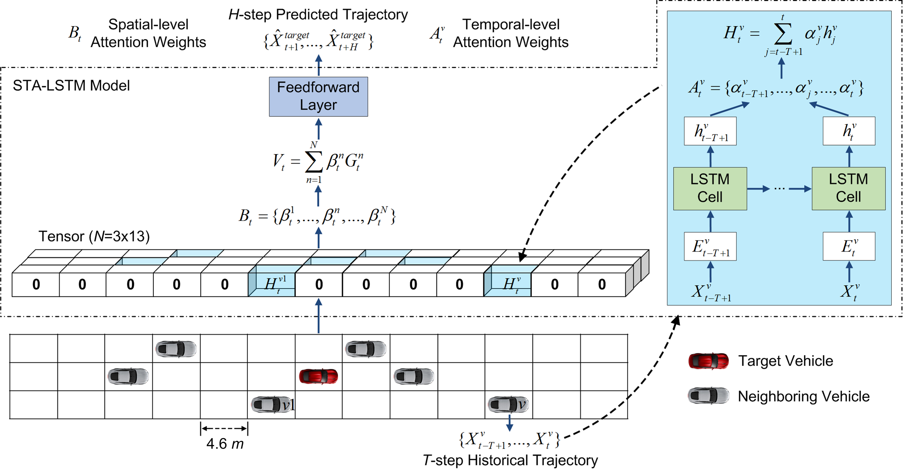

Vehicle Trajectory Prediction Using LSTMs with Spatial-Temporal Attention Mechanisms
Lei Lin1,
Weizi Li2,
Huikun Bi3, and
Lingqiao Qin4
1University of Rochester
2University of Memphis
3Institute of Computing Technology, Chinese Academy of Sciences
4University of Wisconsin-Madison

Abstract
Accurate vehicle trajectory prediction can benefit a variety of Intelligent Transportation System applications ranging from traffic simulation to driver assistance. The need of this ability is pronounced with the emergence of autonomous vehicles, as they require the prediction of nearby vehicles' trajectories in order to navigate safely and efficiently. Recent studies based on deep learning have greatly improved the prediction accuracy. However, one prominent issue of these models is the lack of model explainability. We alleviate this issue by proposing STA-LSTM, an LSTM model with spatial-temporal attention mechanisms for explainability in vehicle trajectory prediction. STA-LSTM not only achieves comparable prediction performance against other state-of-the-art models, but more importantly, explains the influence of historical trajectories and neighboring vehicles on the target vehicle. We provide in-depth analyses of the learned spatial-temporal attention weights in various highway scenarios based on different vehicle and environment factors, including target vehicle class, target vehicle location, and traffic density. A demonstration showing that STA-LSTM can capture and explain fine-grained lane-changing behaviors is also provided.Publication
DOI, IEEE Intelligent Transportation Systems Magazine, 2021Preprint (pdf, 3.8 MB)
Code
BibTeX